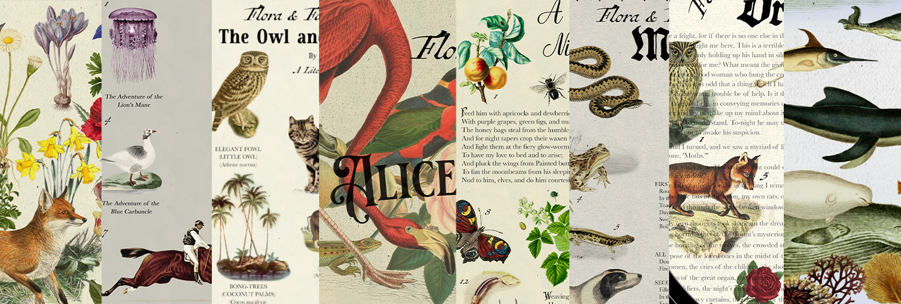

Welcome to Ink & Possibility's free downloads page. Here, you will find pdfs to help you identify all the species and literature references in our Literary Field Guides. Coming September, 2025.
For exclusive premium downloads, join our email list.
Visit us at inkandpossibility.com.